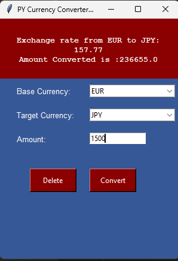

Python Currency Converter API Project
by Marco A.
The Currency Converter API Project uses the European Central Bank (ECB) API to convert currencies.
It allows users to convert between Euro (€), US Dollar ($), and Japanese Yen (¥).
-Users can check the equivalent value of a given amount in their chosen currency.
1.Launching the Currency Converter
- Choose a **Base Currency**
- Example: **Base Currency → € (Euro)**
- Choose a **Target Currency**
- Example: **Target Currency → ¥ (Yen)**
- Enter the **Amount to Exchange**
- Example: **1500 € → ? ¥**
- The **converted amount** is displayed at the top of the window.
